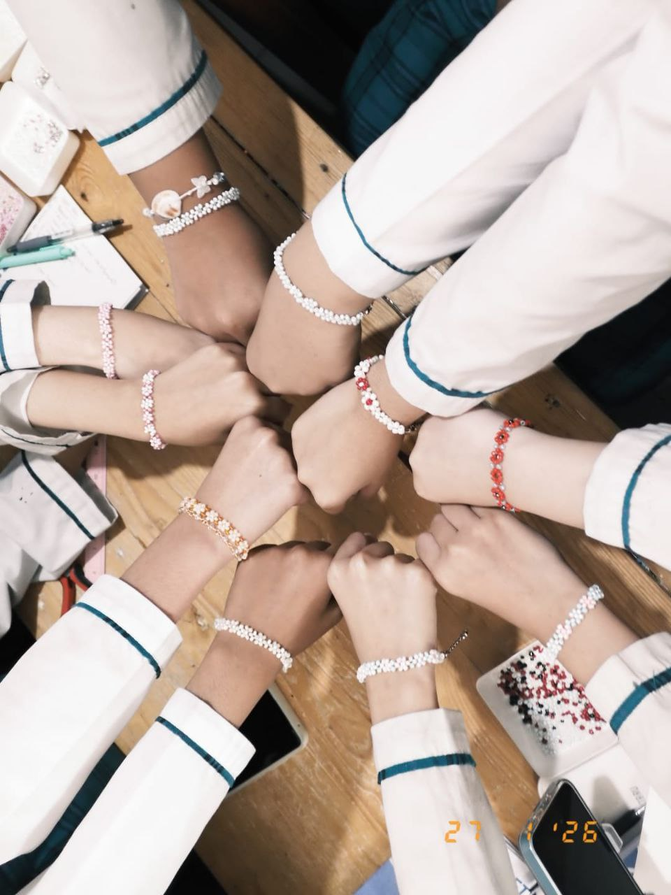
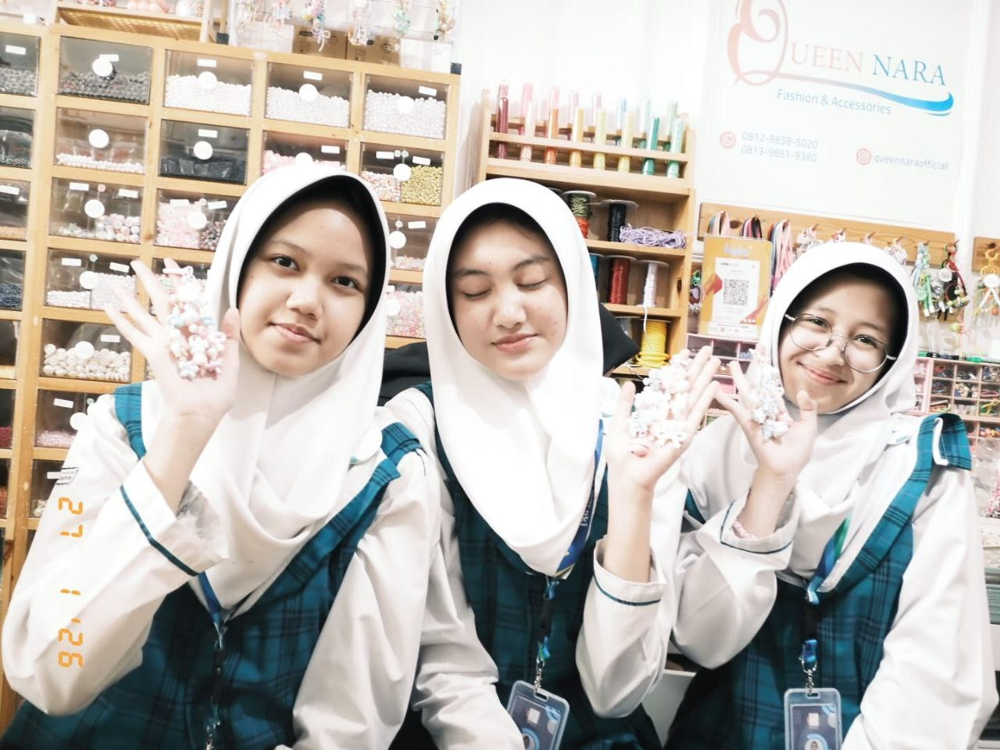
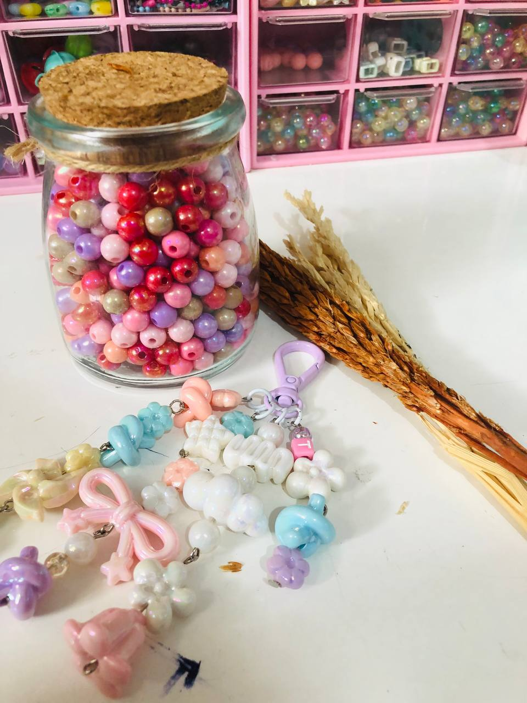
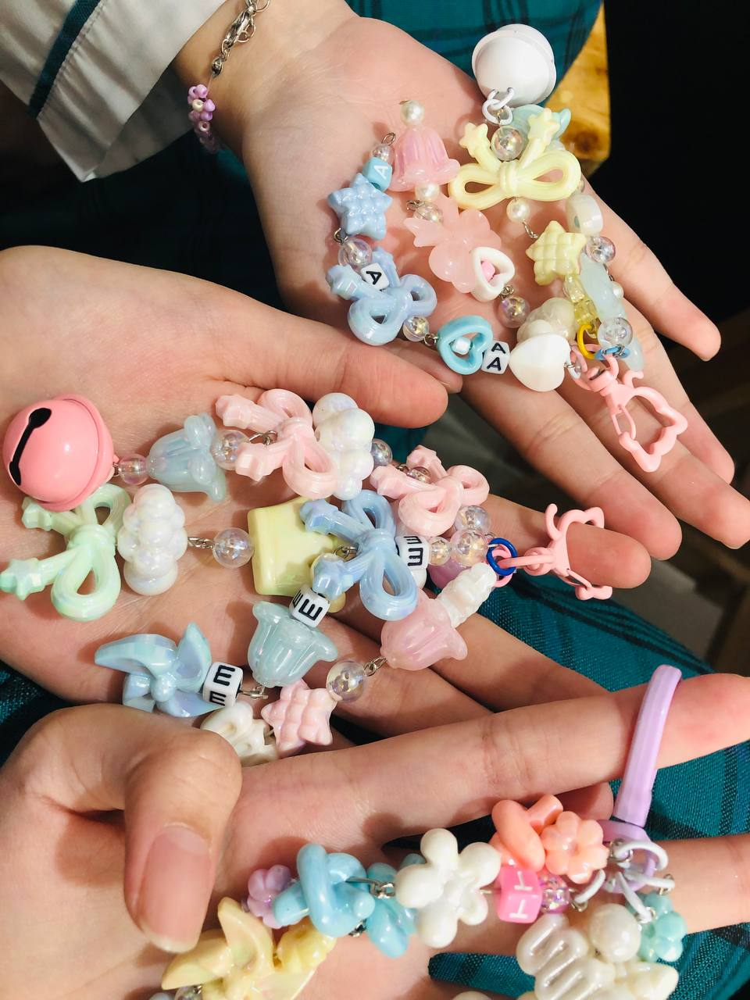
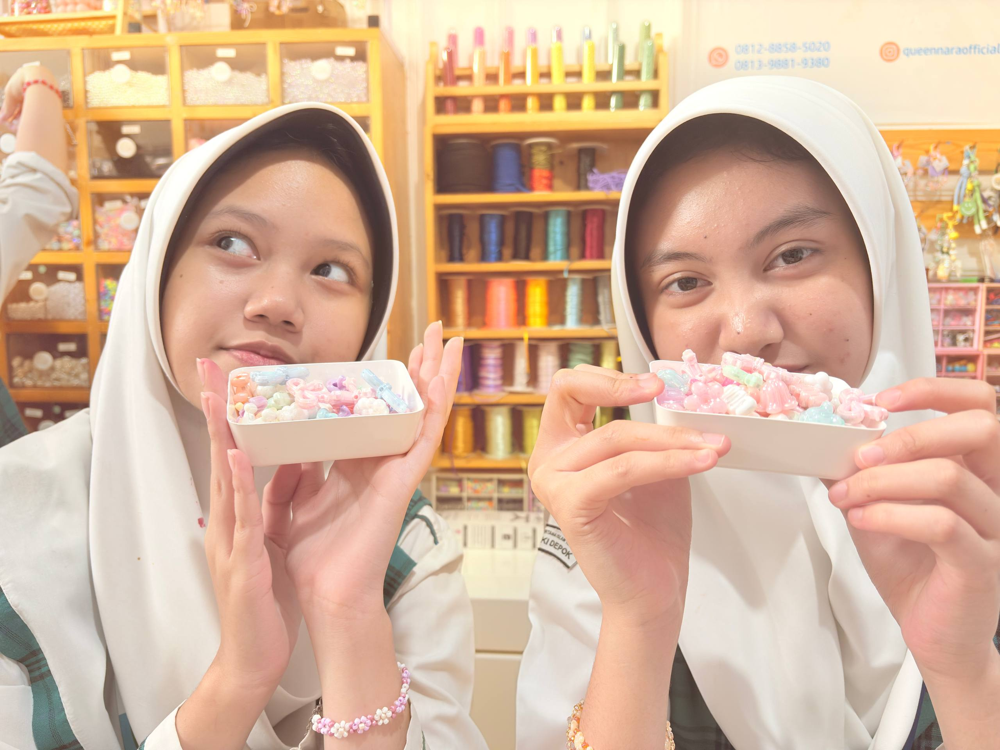

Selamat Datang di Website Portofolio
Website ini merupakan media pendukung untuk menampilkan hasil Ujian Praktik Terintegrasi. Konten utama pada website ini adalah video broadcasting pembelajaran yang berisi penyampaian teks argumentasi secara lisan.
Tentang Website Ini
Website ini merupakan website portofolio digital yang berisi hasil karya dan pembelajaran saya selama mengikuti Ujian Praktik Terintegrasi.
Tujuan Pembuatan Website
Tujuan pembuatan website ini adalah untuk menampilkan karya yang telah saya buat serta melatih kemampuan saya dalam membuat website sederhana menggunakan HTML.
Topik Argumentasi dan Alasan Pemilihan
Topik argumentasi yang saya angkat adalah tentang pentingnya menyebarluaskan kegiatan internship curicculum saya memilih topik tersebut karena menurut saya dapat menjadi informasi kepada banyak orang tentang pengalaman saya melaksanakan internship curicculum, menjelaskan sebagaimana pentinngnya kegiatan ini dan menurut saya topik ini sangat menarik karena belum banyak sekolah yang melakukan kegiatan tersebut.
Harapan dari Video
Harapan saya untuk yang menonton video saya semoga mereka dapat merasa tertarik terhadap kegiatan internship curicculum yang memiliki banyak bidang dan agar mereka mendapatkan gambaran apa yang akan dilakukan saat kegiatan internship curicculum. Pesan saya adalah jangan mudah menyerah dan bekerja sama-lah dengan baik dengan rekan kerja karena dunia kerja tidak semudah yang terlihat.
Refleksi, Kesan, dan Pesan
Selama mengikuti ujian praktik, saya belajar banyak hal, khususnya dalam membuat teks argumentasi. Saya belajar bagaimana menyusun pendapat secara logis, memberikan alasan yang kuat, serta menyampaikan ide dengan bahasa yang jelas dan mudah dipahami. Selain itu, melalui pembuatan video membaca teks argumentasi, saya juga belajar untuk lebih percaya diri, melatih intonasi, dan cara berbicara di depan kamera dengan baik. Selama belajar di SMPIT Al Haraki, saya mendapatkan banyak pengalaman berharga, baik dalam bidang akademik maupun pembentukan karakter. Saya merasa lingkungan sekolah sangat mendukung untuk belajar dan berkembang, serta para guru yang sabar dalam membimbing siswa.
Kesan saya selama belajar di SMPIT Al Haraki sangat menyenangkan. Saya mendapatkan banyak teman, pengalaman, dan ilmu yang bermanfaat. Pesan saya, semoga SMPIT Al Haraki terus menjadi sekolah yang baik dan dapat mencetak generasi yang berakhlak baik dan berprestasi.





